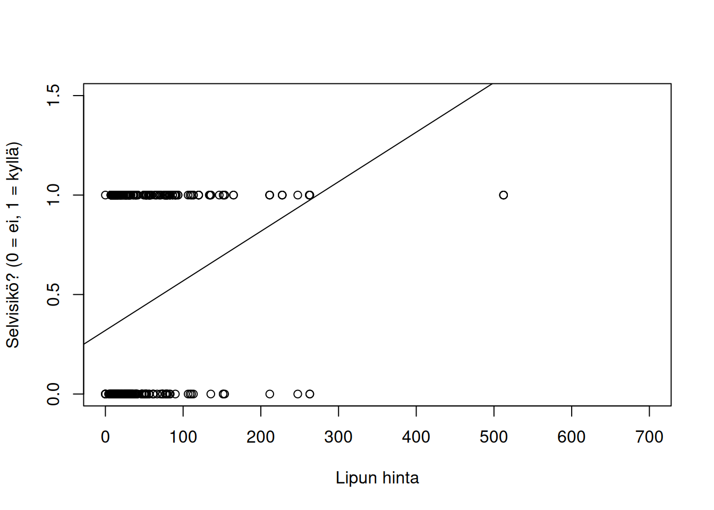
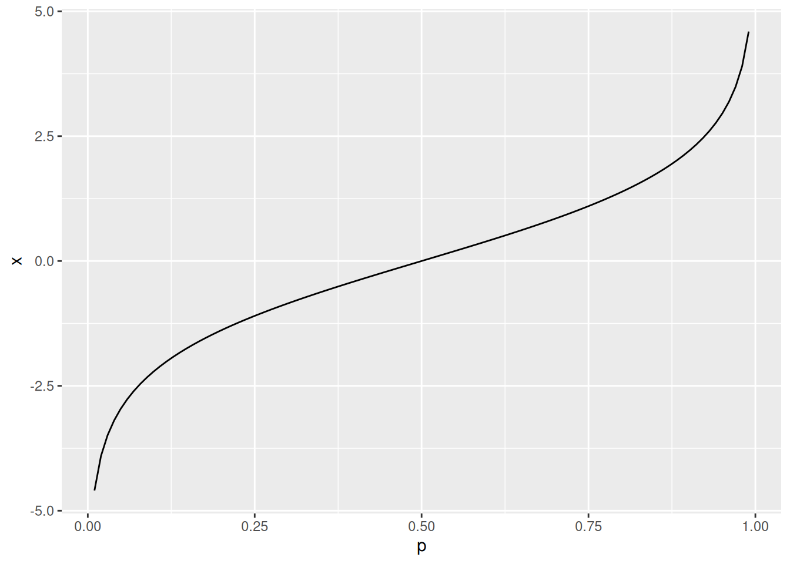
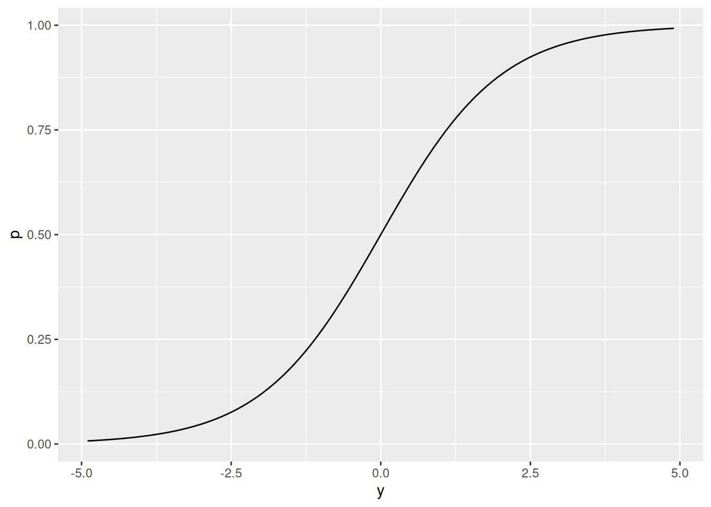

Luku 8 Logistinen regressio
Tavallisessa lineaarisessa regressiossa selittäjät saavat olla intervalliasteikkoisia (esimerkiksi ikä) tai luokkamuuttujia (esimerkiksi \(1 = \text{työntekijä kokoaikainen}\), \(0 = \text{työntekijä osa-aikainen}\)) mutta selitettävä muuttuja on aina intervalliasteikkoinen (esimerkiksi vuosipalkka). Kuitenkin useissa tapauksissa halutaan mallintaa esimerkiksi binääristä kyllä/ei luokkamuuttujaa muiden selittäjien avulla. Alla listaamme muutaman esimerkin.
Miten eri tekijät vaikuttavat siihen saako ihminen syövän vai ei?
Miten ahkeruus vaikuttaa siihen pääseekö opiskelija tentistä läpi vai ei?
Mitkä eri tekijät vaikuttivat siihen selvisikö henkilö pelastuslauttaan Titanicin upotessa?
Esimerkki 8.1 näyttää, että yllä mainituissa tapauksissa tavallinen lineaarinen regressio ei ole kovin luonnollinen malli.
Esimerkki 8.1 (Varoittava esimerkki) Havaintoaineisto titanic sisältää dataa liittyen surullisenkuuluisaan Titanic risteilijän uppoamiseen vuonna 1912. Yksi havainto eli rivi kuvaa yhtä Titanicin matkustajaa (\(n = 714\)). Jokaista matkustajaa kohden meillä on dataa liittyen neljään muuttujaan.
survived: selvisikö matkustaja vai ei (\(0 = \text{ei}\), \(1 = \text{kyllä}\))?age: matkustajan ikä vuosissa.sex: matkustajan sukupuoli.fare: lipun hinta.
## # A tibble: 714 × 4
## survived age sex fare
## <int> <dbl> <fct> <dbl>
## 1 0 22 male 7.25
## 2 1 38 female 71.3
## 3 1 26 female 7.92
## 4 1 35 female 53.1
## 5 0 35 male 8.05
## 6 0 54 male 51.9
## 7 0 2 male 21.1
## 8 1 27 female 11.1
## 9 1 14 female 30.1
## 10 1 4 female 16.7
## # ℹ 704 more rowsTavoitteenamme on selittää selviytymistodennäköisyyttä muilla muuttujilla age, sex ja fare. Yksinkertaisuuden vuoksi rajoitutaan vielä yhden selittäjän lineaariseen malliin
\[\begin{equation*}
\texttt{survived}_i = \beta_0 + \beta_1 \texttt{fare}_i + \varepsilon_i,
\quad i\in\{1, \ldots, n\}.
\end{equation*}\]
Koska tavallisten oletusten alla \(\mathbb{E}(\varepsilon_i) = 0\), niin lineaarinen malli voidaan kirjoittaa muodossa23
\[\begin{equation*}
\mathbb{E}\left(\texttt{survived}_i\right) = \beta_0 + \beta_1\texttt{fare}_i.
\end{equation*}\]
Oletetaan, että jokainen \(\texttt{survived}_i\) noudattaa Bernoullijakaumaa eli
\[\begin{equation*}
\mathbb{P}\left(\texttt{survived}_i\right) =
\begin{cases}
p_i,& \text{jos}\ \texttt{survived}_i = 1, \\
1 - p_i,& \text{jos}\ \texttt{survived}_i = 0,
\end{cases}
\end{equation*}\]
jossa \(p_i\in[0,1]\) on henkilön \(i\) selviytymistodennäköisyys. Tällöin \(\mathbb{E}\left(\texttt{survived}_i\right) = p_i\) ja lineaariselle regressiomallille saadaan tulkinta alla olevan kaavan avulla,
\[\begin{equation*}
p_i = \beta_0 + \beta_1\texttt{fare}_i.
\end{equation*}\]
Lineaarinen malli siis kertoo, miten selviytymistodennäköisyys \(p_i\) riippuu lipun hinnasta fare. Kuvassa 8.1 näkyvästä sovitteesta voidaan tulkita, että kun lipun hinta kasvaa, niin selviytymistodennäköisyys kasvaa. Kuitenkin tarpeeksi suurella lipun hinnalla ennustettu selviytymistodennäköisyys on suurempaa kuin 1! Tavallinen lineaarinen malli ei siis ole kovin hyödyllinen mallintamaan selviytymistodennäköisyyttä, koska tarpeeksi suurilla (tai pienillä) selittäjien arvoilla selviytymistodennäköisyydeksi saadaan ykköstä suurempia arvoja (tai nollaa pienempiä) arvoja.
linear_prob_model <- lm(survived ~ fare, data = titanic)
plot(titanic$fare, titanic$survived, xlim = c(0, 700), ylim = c(0, 1.5),
xlab = "Lipun hinta", ylab = "Selvisikö? (0 = ei, 1 = kyllä)")
abline(a = linear_prob_model$coefficients[1],
b = linear_prob_model$coefficients[2])
Kuva 8.1: Lineaarisen mallin \(p_i = \beta_0 + \beta_1\texttt{fare}_i\) sovitus havaintoaineistoon.
Tässä luvussa esittelemme yleistyksen lineaarisesta regressiosta tapaukseen, jossa selitettävä muuttuja voi olla binäärinen \(0\)/\(1\) luokkamuuttuja ja selittäjät voivat edelleen olla luokkamuuttujia tai intervalliasteikkoisia. Käsittelemme pääosin yhden selittäjän logistista regressiota. Luvussa 8.1 käymme läpi yhden selittäjän logistisen regressiomallin perusteet. Luvussa 8.2 esittelemme työkaluja sovitetun mallin analysointiin. Viimeiseksi luvussa 8.3 sanomme pari sanaa useamman selittäjän lineaarisesta regressiosta.
8.1 Määritelmä ja tulkinta
Saatavilla on \(n\) kappaletta \(2\)-ulotteisia riippumattomia satunnaishavaintoja \[\begin{equation*} \left\{(y_1, x_1), \ldots, (y_n, x_n)\right\}, \end{equation*}\] jossa havainnon \((y_i, x_i)\) ensimmäinen komponentti kuvaa selitettävää muuttujaa ja toinen komponentti antaa selittävän muuttujan. Tämän lisäksi havainnot \(y_i\) ovat \(0\)/\(1\) arvoisia ja täten noudattavat Bernoullijakaumaa havainnosta \(i\) riippuvalla onnistumistodennäköisyydellä \(p_i\). Kuten esimerkissä 8.1 todettiin, niin \(\mathbb{E}(y_i) = \mathbb{P}(y_i = 1) = p_i\).
Logistisen regression idea on tehdä muunnos selitettävälle muuuttujalle \(\mathbb{E}(y_i) = p_i\) niin, että muunnettu selitettävä muuttuja \(g(p_i)\) voi saada arvoja väliltä \((-\infty, \infty)\). Eli haluamme muodostaa lineaarisen mallin \[\begin{equation} \tag{8.1} g\left(\mathbb{E}(y_i)\right) = \beta_0 + \beta_1 x_i, \quad i\in\{1, 2,\ldots, n\}, \end{equation}\] sopivan linkkifunktion \(g\) avulla24. Logistisessa regressiossa linkkifunktioksi valitaan niin kutsuttu logit funktio. \[\begin{equation*} \mathrm{logit}(p) = \ln\left(\frac{p}{1 - p}\right), \quad p\in[0, 1]. \end{equation*}\] Logit funktio ottaa siis sisäänsä todennäköisyyden \(p\) ja palauttaa reaaliluvun. Logit funktion kuvaaja näkyy kuvan 8.2 vasemmassa ruudussa. Eli logistinen regressiomalli on muotoa \[\begin{equation*} \ln\left(\frac{p_i}{1 - p_i}\right) = \beta_0 + \beta_1 x_i. \end{equation*}\]
Toisaalta logistinen regressiomalli voidaan kirjoittaa logit funktion käänteisfunktion eli logistisen funktion \[\begin{equation*} \mathrm{logit}^{-1}(x) = \mathrm{logistic}(x) = \frac{e^x}{1 + e^{x}}, \quad y\in\mathbb{R}, \end{equation*}\] avulla \[\begin{equation} \tag{8.2} p_i = \frac{\exp\left(\beta_0 + \beta_1 x_i\right)}{1 + \exp\left(\beta_0 + \beta_1 x_i\right)}. \end{equation}\] Logit funktion käänteisfunktion eli logistisen funktion kuvaaja näkyy kuvan 8.2 oikeassa ruudussa.


Kuva 8.2: Vasemmassa kuvassa on logit funktio välillä \([0.01, 0.99]\). Oikeassa kuvassa on logit funktion käänteisfunktio eli logistinen funktio välillä \([-4.9, 4.9]\).
Kaavasta (8.2) nähdään, että logistinen malli kuvaa onnistumistodennäköisyyden riippuvuutta selittäjästä. Lisäksi suhde selitettävän muuttujan ja selittäjän välillä ei ole lineaarinen vaan logistinen. Kuva 8.3 näyttää, miten parametrit \(\beta_0\) ja \(\beta_1\) vaikuttavat selitettävän muuttujan (eli onnistumistodennäköisyyden) ja selittäjän väliseen suhteeseen.
Vasen ylänurkka, \(\beta_0\) vaihtelee ja \(\beta_1 = 0\): Koska selittäjää \(x_i\) vastaava parametri on nolla, niin onnistumistodennäköisyys \(p_i\) ei riipu muuttujasta \(x_i\) lainkaan. Tällöin \(\beta_0\) määrää onnistumistodennäköisyyden \(p = p_i\). Mitä suurempi \(\beta_0\), sitä suurempi onnistumistodennäköisyys.
Oikea ylänurkka, \(\beta_0\) vaihtelee ja \(\beta_1 = 1\): Logistinen käyrä siirtyy \(x\)-akselilla. Myös logistisessa regressiossa \(\beta_0\) antaa jonkinlaisen lähtökohdan onnistumistodennäköisyydelle – vaikka käyrien muoto on samanlainen, niin millä tahansa selittäjän \(x_i\) arvolla sinisen käyrän määrittämä onnistumistodennäköisyys on suurempi kuin mustan tai pinkin käyrän määrittämä onnistumistodennäköisyys.
Vasen alanurkka, \(\beta_0 = 0\) ja \(\beta_1 > 0\) vaihtelee: Kerroin \(\beta_1\) määrittää kuinka jyrkkä logistinen käyrä on. Jos \(\beta_1\) on suuri, niin pienet muutokset selittäjässä aiheuttavat suuria muutoksia onnistumistodennäköisyydessä.
Oikea alanurkka, \(\beta_0 = 0\) ja \(\beta_1 < 0\) vaihtelee: Tulkinta on samantyyppinen kuin vasemman alanurkan kuvaajassa. Ainoa ero on, että kun selittävän muuttujan \(x_i\) arvo kasvaa niin onnistumistodennäköisyys pienenee eikä kasva.
![Vasemmanpuoleisessa yläkulmassa näkyy funktion \(\mathrm{logistic}(\beta_0 + 0 \cdot x)\) kuvaaja arvoilla \(\beta_0 = -2\) (pinkki), \(\beta_0 = 0\) (musta) ja \(\beta_0 = 2\) (sininen). Oikeanpuoleisessa yläkulmassa näkyy funktion \(\mathrm{logistic}(\beta_0 + 1 \cdot x)\) kuvaaja arvoilla \(\beta_0 = -2\) (pinkki), \(\beta_0 = 0\) (musta) ja \(\beta_0 = 2\) (sininen). Vasemmanpuoleisessa alakulmassa näkyy funktion \(\mathrm{logistic}(0 + \beta_1 \cdot x)\) kuvaaja arvoilla \(\beta_1 = 1/2\) (pinkki), \(\beta_1 = 1\) (musta) ja \(\beta_1 = 2\) (sininen). Oikeanpuoleisessa alakulmassa näkyy funktion \(\mathrm{logistic}(0 + \beta_1 \cdot x)\) kuvaaja arvoilla \(\beta_1 = -1/2\) (pinkki), \(\beta_1 = -1\) (musta) ja \(\beta_1 = -2\) (sininen).](tidaja-book_files/figure-html/logistic-1.png)
![Vasemmanpuoleisessa yläkulmassa näkyy funktion \(\mathrm{logistic}(\beta_0 + 0 \cdot x)\) kuvaaja arvoilla \(\beta_0 = -2\) (pinkki), \(\beta_0 = 0\) (musta) ja \(\beta_0 = 2\) (sininen). Oikeanpuoleisessa yläkulmassa näkyy funktion \(\mathrm{logistic}(\beta_0 + 1 \cdot x)\) kuvaaja arvoilla \(\beta_0 = -2\) (pinkki), \(\beta_0 = 0\) (musta) ja \(\beta_0 = 2\) (sininen). Vasemmanpuoleisessa alakulmassa näkyy funktion \(\mathrm{logistic}(0 + \beta_1 \cdot x)\) kuvaaja arvoilla \(\beta_1 = 1/2\) (pinkki), \(\beta_1 = 1\) (musta) ja \(\beta_1 = 2\) (sininen). Oikeanpuoleisessa alakulmassa näkyy funktion \(\mathrm{logistic}(0 + \beta_1 \cdot x)\) kuvaaja arvoilla \(\beta_1 = -1/2\) (pinkki), \(\beta_1 = -1\) (musta) ja \(\beta_1 = -2\) (sininen).](tidaja-book_files/figure-html/logistic-2.png)
![Vasemmanpuoleisessa yläkulmassa näkyy funktion \(\mathrm{logistic}(\beta_0 + 0 \cdot x)\) kuvaaja arvoilla \(\beta_0 = -2\) (pinkki), \(\beta_0 = 0\) (musta) ja \(\beta_0 = 2\) (sininen). Oikeanpuoleisessa yläkulmassa näkyy funktion \(\mathrm{logistic}(\beta_0 + 1 \cdot x)\) kuvaaja arvoilla \(\beta_0 = -2\) (pinkki), \(\beta_0 = 0\) (musta) ja \(\beta_0 = 2\) (sininen). Vasemmanpuoleisessa alakulmassa näkyy funktion \(\mathrm{logistic}(0 + \beta_1 \cdot x)\) kuvaaja arvoilla \(\beta_1 = 1/2\) (pinkki), \(\beta_1 = 1\) (musta) ja \(\beta_1 = 2\) (sininen). Oikeanpuoleisessa alakulmassa näkyy funktion \(\mathrm{logistic}(0 + \beta_1 \cdot x)\) kuvaaja arvoilla \(\beta_1 = -1/2\) (pinkki), \(\beta_1 = -1\) (musta) ja \(\beta_1 = -2\) (sininen).](tidaja-book_files/figure-html/logistic-3.png)
![Vasemmanpuoleisessa yläkulmassa näkyy funktion \(\mathrm{logistic}(\beta_0 + 0 \cdot x)\) kuvaaja arvoilla \(\beta_0 = -2\) (pinkki), \(\beta_0 = 0\) (musta) ja \(\beta_0 = 2\) (sininen). Oikeanpuoleisessa yläkulmassa näkyy funktion \(\mathrm{logistic}(\beta_0 + 1 \cdot x)\) kuvaaja arvoilla \(\beta_0 = -2\) (pinkki), \(\beta_0 = 0\) (musta) ja \(\beta_0 = 2\) (sininen). Vasemmanpuoleisessa alakulmassa näkyy funktion \(\mathrm{logistic}(0 + \beta_1 \cdot x)\) kuvaaja arvoilla \(\beta_1 = 1/2\) (pinkki), \(\beta_1 = 1\) (musta) ja \(\beta_1 = 2\) (sininen). Oikeanpuoleisessa alakulmassa näkyy funktion \(\mathrm{logistic}(0 + \beta_1 \cdot x)\) kuvaaja arvoilla \(\beta_1 = -1/2\) (pinkki), \(\beta_1 = -1\) (musta) ja \(\beta_1 = -2\) (sininen).](tidaja-book_files/figure-html/logistic-4.png)
Kuva 8.3: Vasemmanpuoleisessa yläkulmassa näkyy funktion \(\mathrm{logistic}(\beta_0 + 0 \cdot x)\) kuvaaja arvoilla \(\beta_0 = -2\) (pinkki), \(\beta_0 = 0\) (musta) ja \(\beta_0 = 2\) (sininen). Oikeanpuoleisessa yläkulmassa näkyy funktion \(\mathrm{logistic}(\beta_0 + 1 \cdot x)\) kuvaaja arvoilla \(\beta_0 = -2\) (pinkki), \(\beta_0 = 0\) (musta) ja \(\beta_0 = 2\) (sininen). Vasemmanpuoleisessa alakulmassa näkyy funktion \(\mathrm{logistic}(0 + \beta_1 \cdot x)\) kuvaaja arvoilla \(\beta_1 = 1/2\) (pinkki), \(\beta_1 = 1\) (musta) ja \(\beta_1 = 2\) (sininen). Oikeanpuoleisessa alakulmassa näkyy funktion \(\mathrm{logistic}(0 + \beta_1 \cdot x)\) kuvaaja arvoilla \(\beta_1 = -1/2\) (pinkki), \(\beta_1 = -1\) (musta) ja \(\beta_1 = -2\) (sininen).
Seuraavaksi tavoitteenamme on tulkita tarkemmin, miten kulmakerroin \(\beta_1\) vaikuttaa selitettävään muuttujaan logistisessa regressiossa. Muistellaan ensin kulmakertoimen tulkintaa yhden selittäjän lineaarisessa regressiossa \[\begin{equation*} \mathbb{E}(y_i) = \beta_0 + \beta_1 x_i. \end{equation*}\] Olkoon \(\mathbb{E}(y_i^*) = \beta_0 + \beta_1 (x_i + 1)\). Nyt kaikille \(i\in\{1, \ldots, n\}\) pätee \[\begin{equation*} \mathbb{E}(y_i^*) - \mathbb{E}(y_i) = \left(\beta_0 + \beta_1 (x_i + 1)\right) - \left(\beta_0 + \beta_1 x_i\right) = \beta_1, \end{equation*}\] joten riippumatta selittäjän \(x_i\) arvosta kulmakerroin \(\beta_1\) kuvaa odotusarvoisen muutoksen suuruutta selitettävässä muuttujassa, kun selittäjä kasvaa yhden yksikön \(x_i\rightarrow x_i + 1\). Logistisessa regressiossa tulkinta ei ole näin yksinkertainen, koska käyrän (8.2) kulmakerroin riippuu selittäjän arvosta25 johtuen siitä, että selitettävän muuttujan ja selittäjän suhde on epälineaarinen.
Järkevää parametrin \(\beta_1\) tulkintaa varten esittelemme vetokertoimen (eng: odds) käsitteen. Tapahtuman todennäköisyyden \(p\) vetokerroin \(\mathrm{Odds}(p)\) määritellään olevan \[\begin{equation*} \mathrm{Odds}(p) = \frac{p}{1 - p}. \end{equation*}\] Vetokertoimen käsitteeseen törmää usein vedonlyönnissä, jossa muotoa \(\mathrm{Odds}(p) = a / b\), \(a,b\in\{1, 2, \ldots\}\), oleva vetokerroin kirjoitetaan usein notaatiolla \(a:b\). Alla on esimerkkejä vetokertoimen tulkinnasta.
Esimerkki 8.2 (Vetokerroin)
Kun \(p = 1/2\), niin \(\mathrm{Odds}(p) = 1\). Vetokerroin voidaan myös antaa notaatiolla \(1:1\).
Jalkapallo-ottelussa Bodø/Glimt vastaan Sporting vedonlyöntiyritys antaa vetokertoimen \(5:1\) joukkueen Bodø/Glimt voitolle. Tämä tarkoittaa, että \(\mathrm{Odds}(p) = 5\) ja \(p = 5/6\), jossa \(p\) on todennäköisyys joukkueen Bodø/Glimt voitolle.
Todennäköisyys, että huomenna sataa on \(p = 0.11\). Tällöin \(\mathrm{Odds}(p) \approx 0.1236\).
Vetokerrointa \(3:2\) vastaava onnistumistodennäköisyys on \(p = 3 / (3 + 2) = 3 / 5\). Vetokerroin voidaan kirjoittaa myös muodossa \(\mathrm{Odds}(p) = 3/2\).
Kahden erillisten tapahtuman todennäköisyyksiä \(p_1\) ja \(p_2\) voidaan verrata vetosuhteella (eng: odds ratio) \[\begin{equation*} \mathrm{OR}(p_1, p_2) = \frac{\mathrm{Odds}(p_1)}{\mathrm{Odds}(p_2)}. \end{equation*}\] Vetosuhteen tulkinta on seuraava.
Jos \(\mathrm{OR}(p_1, p_2) > 1\), niin ensimmäinen tapahtuma on todennäköisempi kuin toinen.
Jos \(\mathrm{OR}(p_1, p_2) = 1\), niin tapahtumat ovat yhtä todennäköisiä.
Jos \(\mathrm{OR}(p_1, p_2) < 1\), niin toinen tapahtuma on todennäköisempi kuin ensimmäinen.
Esimerkki 8.3 (Vetosuhde) Tupakoimattomista ihmisistä \(p_1 = 20\%\) saa keuhkosyövän ja tupakoivista ihmisistä \(p_2 = 60\%\) saa keuhkosyövän. Nyt \(\mathrm{Odds}(p_1) = 0.25\) ja \(\mathrm{Odds}(p_2) = 1.5\). Tällöin \[\begin{equation*} \mathrm{OR}(p_2, p_1) = \frac{1.5}{0.25} = 6. \end{equation*}\] Vetosuhteen tulkinta: Jos löisit vetoa siitä saako ihminen syövän, niin tupakoitsijaa vastaava vetokerroin on kuusi kertaa suurempi kuin tupakoimatonta henkilöä vastaava vetokerroin.
Nyt vetosuhteen käsitteen avulla saamme vihdoinkin tulkinnan kertoimelle \(\beta_1\). Olkoon \(p_i\) kuten kaavassa (8.2) ja \[\begin{equation*} p_i^* = \frac{\exp\left(\beta_0 + \beta_1 (x_i + 1)\right)}{1 + \exp\left(\beta_0 + \beta_1 (x_i + 1)\right)}. \end{equation*}\] Nyt viikon 10 harjoitustehtävän 1 mukaan \[\begin{equation*} \mathrm{OR}(p_i^*, p_i) = \exp\left(\beta_1\right). \end{equation*}\] Eli \(\exp(\beta_1)\) kuvaa vetokertoimen suhteellista muutosta, kun selittäjä kasvaa yhden yksikön \(x\rightarrow x+1\).
Esimerkki 8.4 (Parametrien \(\beta_0\) ja \(\beta_1\) tulkinta) Data-analyytikko tutkii iän ja ja erään taudin suhdetta sovittamalla logistisen regressiomallin \[\begin{equation*} \mathrm{logit}(p_i) = -2 + 0.03 x_i. \end{equation*}\] Tällöin vastasyntyneellä lapsella (\(x_i = 0\)) tauti kehittyy todennäköisyydellä \[\begin{equation*} p_i = \mathrm{logit}^{-1}(\beta_0) = \mathrm{logistic}(\beta_0) = \frac{e^{-2}}{1 + e^{-2}} \approx \approx 0.12. \end{equation*}\] ja esimerkiksi \(50\) vuotiaalle henkilölle tauti kehittyy todennäköisyydellä \(\mathrm{logistic}(\beta_0 + \beta_1 \cdot 50)\approx 0.38\).
Jokainen lisävuosi kasvattaa vetokerrointa taudin saamiselle suhteellisella osuudella \(\exp(\beta_1) = \exp(0.03)\approx 1.03\). Tällöin kymmenen vuoden vanheneminen kasvattaa vetokerrointa taudin saamiselle \(\approx 35\%\), sillä \[\begin{equation*} \exp(0.03)^{10} = \exp(0.30) \approx 1.35. \end{equation*}\]
8.2 Tilastollinen päättely
Tavallinen lineaarinen regressiomalli sovitetaan pienimmän neliösumman menetelmällä, jonka avulla vakiotermin ja kulmakertoimien estimaateille saadaan tietyt kaavat (katso yhtälö (3.7)). Kuitenkin logistinen regressiomalli sovitetaan suurimman uskottavuuden menetelmällä. Lisäksi logistisen regressiomallin tapauksessa estimaatteja ei saada laskettua sijoittamalla lukuja johonkin kaavaan vaan uskottavuusfunktion maksimi täytyy approksimoida numeerisen algoritmin kuten iteratiivisen painotetun pienimmän neliösummamenetelmän avulla. Esimerkiksi R:ssä logistinen regressiomalli voidaan sovittaa funktiolla glm(). Funktion glm() avulla voidaan sovittaa muunlaisiakin yleistettyja lineaarisia malleja kuin logistinen regressiomalli, joten argumentissa family täytyy määrittää selitettävän muuttujan jakauma ja linkkifunktio oikein. Logistisessa regressiossa asetetaan family = binomial(link = "logit").
Kun malli ollaan sovitettu, niin kuten tavallisen lineaarisen regression tapauksessa, olemme kiinnostuneita estimaattien tulkintojen lisäksi estimaatteihin liittyvistä epävarmuuksista. Eli parametrin \(\beta_j\), \(j\in\{0, 1\}\), tapauksessa olemme kiinnostuneita testaamaan seuraavaa nollahypoteesia \(H_0\) vaihtoehtoista hypoteesia \(H_1\) vastaan \[\begin{align*} &H_0: \beta_j = 0, \\ &H_0: \beta_j \neq 0. \end{align*}\] Olkoon \(s_{\hat\beta_j}^2\) varianssin \(\mathrm{Var}\left(\hat\beta_j\right)\) estimaattori. Nollahypoteesin alla testisuure \[\begin{equation*} z = \frac{\hat\beta_j}{\sqrt{s_{\hat\beta_j}^2}} \end{equation*}\] noudattaa likimain standardinormaalijakaumaa \(N(0, 1)\) tarpeeksi suurilla otoksilla. Tämä tilastollinen testi on siis hyvin samanlainen kuin t-testi tavallisen lineaarisen regression parametrien merkitsevyydelle. Seuraavassa esimerkissä sovitamme logistisen regressiomallin, annamme tulkinnat parametreille ja päättelemme, ovatko parametrit tilastollisesti merkitseviä.
Esimerkki 8.5 (Mallin sovitus) Sovitetaan esimerkin 8.1 titanic dataan yhden selittäjän logistinen regressiomalli
\[\begin{equation*}
p_i = \mathrm{logistic}(\beta_0 + \beta_1 \texttt{sex}_i)
= \frac{\exp\left(\beta_0 + \beta_1 \texttt{sex}_i\right)}{1 + \exp\left(\beta_0 + \beta_1 \texttt{sex}_i\right)},
\end{equation*}\]
jossa \(p_i\) on todennäköisyys, että matkustaja \(i\) selviytyy ja
\[\begin{equation*}
\texttt{sex}_i =
\begin{cases}
1,&\text{jos matkustaja $i$ oli nainen}, \\
0,&\text{jos matkustaja $i$ oli mies}.
\end{cases}
\end{equation*}\]
Huomaa siis, että \(\texttt{sex}_i\) on osoitinmuuttuja ja sovitettava malli voidaan kirjoittaa myös muodossa
\[\begin{equation*}
p_i =
\begin{cases}
\mathrm{logistic}\left(\beta_0 + \beta_1\right), &\text{jos matkustaja $i$ oli nainen}, \\
\mathrm{logistic}\left(\beta_0\right), &\text{jos matkustaja $i$ oli mies}.
\end{cases}
\end{equation*}\]
Alla sovitetaan kuvailtu logistinen regressiomalli ja tulostetaan summary(titanic_model). Kuten tavallisen lineaarisen regression tapauksessa, komento summary(titanic_model) antaa paljon informaatiota mutta tässä esimerkissä keskitymme vain parametrien \(\beta_0\) ja \(\beta_1\) estimaatteihin \(\hat\beta_0\) ja \(\hat\beta_1\).
titanic_model <- glm(survived ~ sex, data = titanic, binomial(link = "logit"))
summary(titanic_model)##
## Call:
## glm(formula = survived ~ sex, family = binomial(link = "logit"),
## data = titanic)
##
## Coefficients:
## Estimate Std. Error z value Pr(>|z|)
## (Intercept) -1.3535 0.1163 -11.64 <2e-16 ***
## sexfemale 2.4778 0.1850 13.39 <2e-16 ***
## ---
## Signif. codes: 0 '***' 0.001 '**' 0.01 '*' 0.05 '.' 0.1 ' ' 1
##
## (Dispersion parameter for binomial family taken to be 1)
##
## Null deviance: 964.52 on 713 degrees of freedom
## Residual deviance: 750.70 on 712 degrees of freedom
## AIC: 754.7
##
## Number of Fisher Scoring iterations: 4Ensinnäkin merkitsevyystasolla \(\alpha = 0.05\) sekä \(\beta_0\) ja \(\beta_1\) ovat tilastollisesti merkitseviä. Toiseksi koska tämän esimerkin logistisessa regressiomallissa on vain yksi selittäjä, joka on osoitinmuuttuja, niin tulkinta menee ehkä hieman suoraviivaisemmin kuin yleensä. Eli estimoitu selviytymistodennäköisyys miehille saadaan kaavasta \(\mathrm{logistic}\left(\beta_0\right)\), joka voidaan laskea R:llä.
# Rename function for convenience
logistic <- plogis
# Compute estimated survival probability for men
logistic(titanic_model$coefficients[1])## (Intercept)
## 0.205298Samoin estimoitu selviytymistodennäköisyys naisille saadaan kaavasta \(\mathrm{logistic}\left(\beta_0 + \beta_1\right)\).
## [1] 0.7547893Naisten selviytymistodennäköisyys \(\approx 0.75\) Titanicilta oli siis merkittävästi korkeampi kuin miesten \(\approx 0.21\).
Estimaatille \(\hat\beta_1\) saadaan tulkinta myös vetosuhteen kautta. Eli alla olevan koodinpätkän mukaan vetokerroin naisen selviämiselle on \(\exp(\beta_1) \approx 11.9\) kertaa suurempi kuin vetokerroin miehen selviämiselle Titanicilta.
## sexfemale
## 11.91532Teknisesti ottaen, jos selittäjä \(\texttt{fare}\) käsitetään satunnaismuuttujana, niin meidän täytyisi käyttää ehdollista odotusarvoa \(\mathbb{E}(\texttt{survived}|\texttt{fare})\). Jos ajatellaan, että selittäjä ei ole satunnainen ja kaikki satunnaisuus tulee satunnaistermeistä \(\varepsilon_i\), niin merkintä \(\mathbb{E}(\texttt{survived})\) on ok. Tällä kurssilla emme kuitenkaan takerru tämäntyyppisiin yksityiskohtiin.↩︎
Linkkifunktio voidaan valita eri tavoin riippuen asiayhteydestä. Kaavan (8.1) näköisen yleistetyn lineaarisen mallin (eng: generalized linear model) lisäksi linkkifunktioilla (tai linkkifunktioiden käänteisfunktioilla) on merkittävä rooli esimerkiksi neuroverkoissa.↩︎
Vapaaehtoisena harjoitustehtävänä voit todistaa, että funktion \(p(x) = \mathrm{logistic}(\beta_0 + \beta_1 x)\) “kulmakerroin” eli derivaatta on \(p'(x) = \beta_1p(x)(1-p(x))\) kohdassa \(x\).↩︎